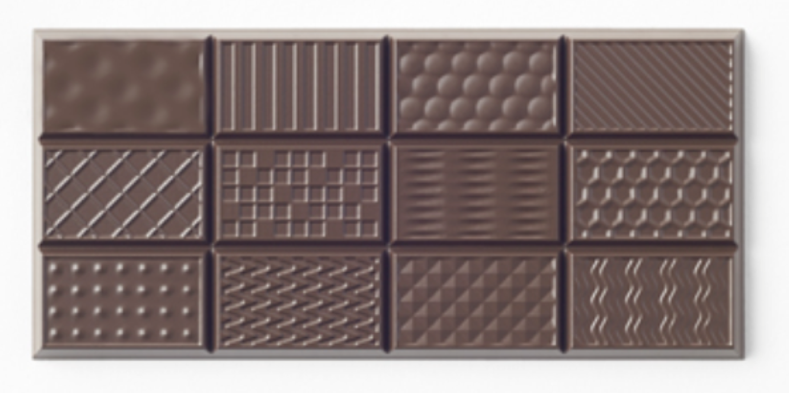

This project aims to create a new chocolate bar through the use of 3D printing. Currently chocolate bars are limited to shapes created by prefabricated molds. This limits the interactions and expereinces people can have with their chocolate bars. By using a 3D printer, different flavors can be deposited in specific areas of the bar. This project aims to design a bar that utlizes this advantage to create new flavor interactions. This project also aims to challenge the traditional flavors that accompany chocolate. Through molecular gastronomy, typically irregular flavors will be chosen as additions to the bar. Reasrach into the flavor pairins is still ongoing.As well as being a good aromatic match, these flavors will also serve an aestetic role in the chocolate bar as the goal is to have a visual representation of flavor concentrations.
This project takes inspiration from the Nendo Chocolatexturebar. The bar was created with each square having a unique texture. The idea behind teh project was to examine the different tastes that come from different textures.
